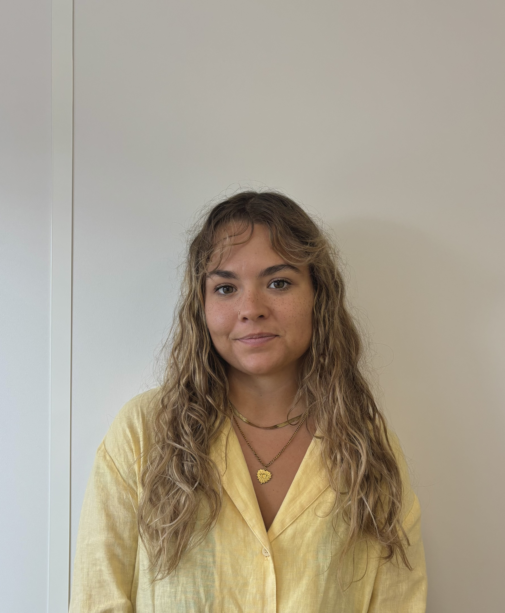

Data Science · IA · Machine Learning
Programmation · Reporting
Data Scientist
Portfolio

À Propos de Moi
✨ Vous cherchez quelqu’un de passionnée par la science des données ?
🚀 Je suis à la recherche d’une opportunité dans le domaine de la data afin de mettre mes compétences au service d’une organisation innovante et de contribuer à transformer les données en actions stratégiques.
🎯 Data Scientist | Data Analyst | Data Engineer
➡️ Langages : Python · R · SQL · Power BI · SAS
➡️ Compétences : Data Visualization · Statistiques · Machine Learning · Modélisation prédictive · Reporting · IA · Mathématiques appliquées
➡️ Soft skills : Orientation résultats · Transformation digitale · Optimisation de la performance · Communication scientifique · Vulgarisation des insights
📚 Mon parcours :
- Expérience en Data Science chez Airbus Atlantic
- Master en Ingénierie Statistique (major de promotion)
- Licence de Mathématiques
✅ Ce qui me différencie :
- Solide formation mathématique, base essentielle pour l’analyse statistique et la modélisation avancée
- Capacité à vulgariser les résultats et rendre la data accessible à tous les publics
- Esprit collaboratif et autonome, à l’aise en équipe comme en projet individuel
- Curiosité et apprentissage continu des nouvelles approches et technologies data
- Forte motivation et implication totale dans chaque projet
- Ouverte à la mobilité géographique et aux environnements stimulants
N’hésitez pas à me contacter pour échanger ou collaborer sur des projets data.